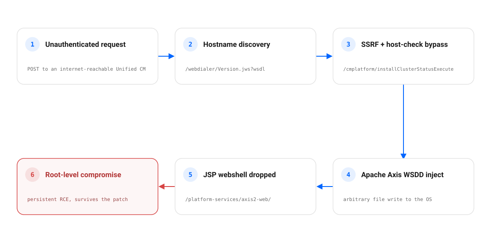
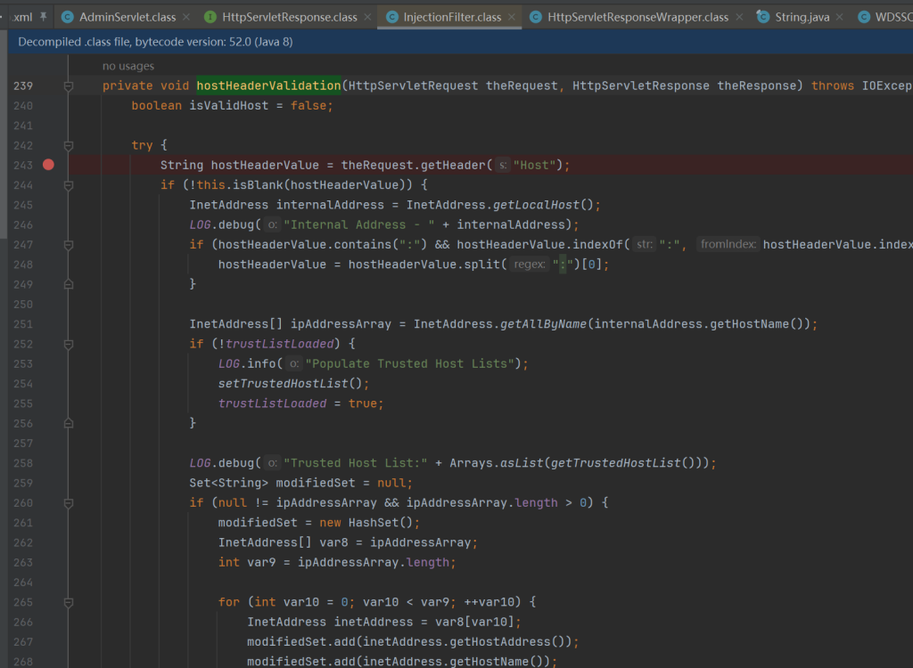
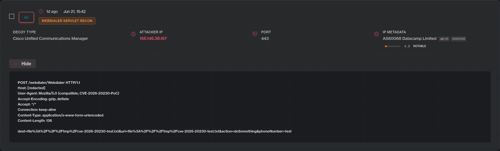

On June 3, 2026, Cisco patched a server-side request forgery bug in Unified Communications Manager, its enterprise phone system. The CVSS base score was 8.6, which sits in the High band. Cisco rated it Critical anyway.
That gap is the point. The CVSS vector is integrity-only, so on paper the bug just lets an attacker write a file. That file write is the first link in a chain that ends with a webshell and root access on a server sitting in the middle of the corporate network. Cisco said as much in the advisory.
Within three weeks the chain was public, and then it was automated. By late June, attackers were sweeping the internet over Tor and dropping webshells, and CISA had given federal agencies until June 28 to patch. The important part: the webshell they drop survives the patch. Fixing the SSRF closes the door, but it does nothing about anyone already inside.

TL;DR
CVE-2026-20230is an unauthenticated SSRF (CWE-918) in Cisco Unified CM and Unified CM SME, in the WebDialer service. Cisco advisorycisco-sa-cucm-ssrf-cXPnHcW, bug IDCSCws67331.- The CVSS base score is 8.6 and the vector is integrity-only, but Cisco set the Security Impact Rating to Critical because the file write can be escalated to root.
- It only applies when the WebDialer service is enabled. WebDialer is off by default, but it is commonly turned on for click-to-dial, so do not assume you are safe.
- Researchers chained the SSRF into a persistent JSP webshell under
/platform-services/axis2-web/. The patch alone does not remove it. - It is actively exploited and on CISA’s KEV list (added June 25, federal deadline June 28). Patch to
14SU6or15SU5(or the interim COP), then hunt for a foothold. There is no real workaround; disabling WebDialer is only a mitigation.
How the chain works
Unified CM exposes a web service called WebDialer, the component behind the click-to-dial buttons in softphones. The vulnerable code does not properly validate certain HTTP requests, and an unauthenticated attacker can use that to make the server write files to its own disk. Cisco’s advisory states the impact directly:
“The reason is that exploitation of this vulnerability could result in an attacker elevating privileges to root.”Cisco advisory cisco-sa-cucm-ssrf-cXPnHcW
There is one precondition. The server checks the incoming request against a list of trusted hostnames, so an attacker cannot simply point it at localhost. The SSD Secure Disclosure write-up shows that validation logic, and it shows the way around it: the attacker first asks WebDialer for the server’s real hostname through an unauthenticated WSDL endpoint, /webdialer/Version.jws?wsdl, then replays that hostname to pass the check.

From there it is mechanical. The discovered hostname gets the request to an internal cluster-install servlet, /cmplatform/installClusterStatusExecute, whose hostname parameter is not properly checked either. That parameter is used to inject a malicious Apache Axis service descriptor (a WSDD) into the Axis framework already running on the box, a technique in the same family as the older Apache Axis bug CVE-2019-0227. The injected handler gives the attacker an arbitrary file write. You will also see this called a file:// SSRF, which is the shape the in-the-wild recon probes took. The primitive in the disclosed PoC is the Axis descriptor injection, not a file:// fetch.
With a file write in hand, the attacker stages the payload. They write a first-stage JSP file-writer under /platform-services/axis2-web/, then use it to drop a second-stage JSP command shell in the same directory. That shell runs in the Unified CM Tomcat web context and gives persistent command execution over HTTP, and the underlying OS file write is what Cisco says can then be turned into root.
The SSRF is the way in, but the webshell is what stays. It is an ordinary file on disk in a web-served directory, so patching the SSRF does not remove it. Closing CVE-2026-20230 stops new break-ins. It does nothing about a shell that is already there.
Why it matters
Unified CM is not a peripheral box. It is the core of enterprise voice: user directories, call-routing tables, voicemail, and it usually integrates with HR and directory systems. A webshell there is a foothold well inside the network, on a host whose logs tend to get reviewed far less often than anything on the perimeter.
Root on that host opens a wide blast radius. From it an attacker can harvest credentials, alter directory integrations, intercept or record calls, disrupt emergency calling, and pivot into whatever the server can reach. Unified CM commonly runs as a VM on Cisco UCS hardware under VMware ESXi, so the surrounding virtualization and management network is in scope too.
Exploited in the wild
Cisco said it was not aware of any malicious use when it shipped the fix on June 3. That did not last. Proof-of-concept code was circulating within days, and over the weekend of June 21 the threat-intelligence firm Defused caught the first hits on its honeypots: a single source fingerprinting Cisco Unified CM decoys with a PoC that wrote a harmless marker file to /tmp to check whether the target was writable.

By June 24 the activity had turned into automated, Tor-routed sweeps that dropped webshells instead of test files, and Horizon3.ai had shipped a NodeZero test so defenders could safely check exploitability. On June 25, CISA added CVE-2026-20230 to its Known Exploited Vulnerabilities catalog and set a federal remediation deadline of June 28 under BOD 26-04.
- Jun 3, 2026Cisco publishes advisory cisco-sa-cucm-ssrf-cXPnHcW and ships fixes (14SU6 / 15SU5), stating it is not aware of any malicious use.
- Jun 5, 2026Public reporting flags the availability of proof-of-concept exploit code.
- Jun 21, 2026Defused observes the first in-the-wild activity on its honeypots: reconnaissance from a single source, writing a marker file to /tmp.
- Jun 24, 2026SSD Secure Disclosure publishes the full technical write-up; activity escalates to automated, Tor-routed sweeps dropping webshells.
- Jun 25, 2026CISA adds CVE-2026-20230 to the KEV catalog with a June 28 federal remediation deadline under BOD 26-04.
No threat actor has been named, and no confirmed organizational breach has been reported yet. The observed traffic looks like opportunistic mass scanning rather than a targeted campaign. Given the persistence, assume any exposed, unpatched instance already has a shell on it.
Detection and IOCs
Start by finding out whether you are exposed at all. In Cisco Unified CM Administration, switch to Cisco Unified Serviceability, then open Tools and Control Center - Feature Services, and look under the CTI Services section for Cisco WebDialer Web Service. If it shows Started, the service is enabled and reachable.
Then hunt for a foothold. The early recon left a marker file, and the live attacks leave JSP files in the Axis web directory:
1# recon marker dropped by the early proof-of-concept
2/tmp/cve-2026-20230-test.txt
3
4# webshell drop directory (review it; attacker filenames vary)
5/platform-services/axis2-web/*.jsp
6
7# request patterns worth alerting on in access logs
8/webdialer/Version.jws?wsdl # hostname-discovery probe
9/cmplatform/installClusterStatusExecute # anomalous hostname parameterBeyond those, watch for unexpected file-creation events on the host, unfamiliar Apache Axis service or handler registrations, inbound traffic from Tor exit nodes, and any anomalous outbound connections from a server that normally just routes calls.
How to respond
There is no clever workaround here. Cisco says so plainly:
“There are no workarounds that address this vulnerability.”Cisco advisory cisco-sa-cucm-ssrf-cXPnHcW
So the response is patch, contain, verify.
- Patch now. Upgrade Unified CM and Unified CM SME to
14SU6(14 train) or15SU5(15 train, due around September 2026), or apply the interim COP patch until 15SU5 is available. With active exploitation, public PoC, and a KEV deadline, treat every exposed instance as an emergency. - If you cannot patch immediately, disable WebDialer. Stop
Cisco WebDialer Web Servicein Control Center - Feature Services, or deactivate it under Service Activation. Exploitation requires it to be running. This is a stopgap, not a fix. - Assume persistence. Because the webshell survives patching, hunt for the marker file and for JSP files under
/platform-services/axis2-web/before you call an instance clean. Treat any exposed, unpatched host as compromised until forensics says otherwise. - Reduce exposure. Take Unified CM admin and web interfaces off the public internet, segment the voice network, and review the directory, HR, and credential material a compromised UCM host could reach.